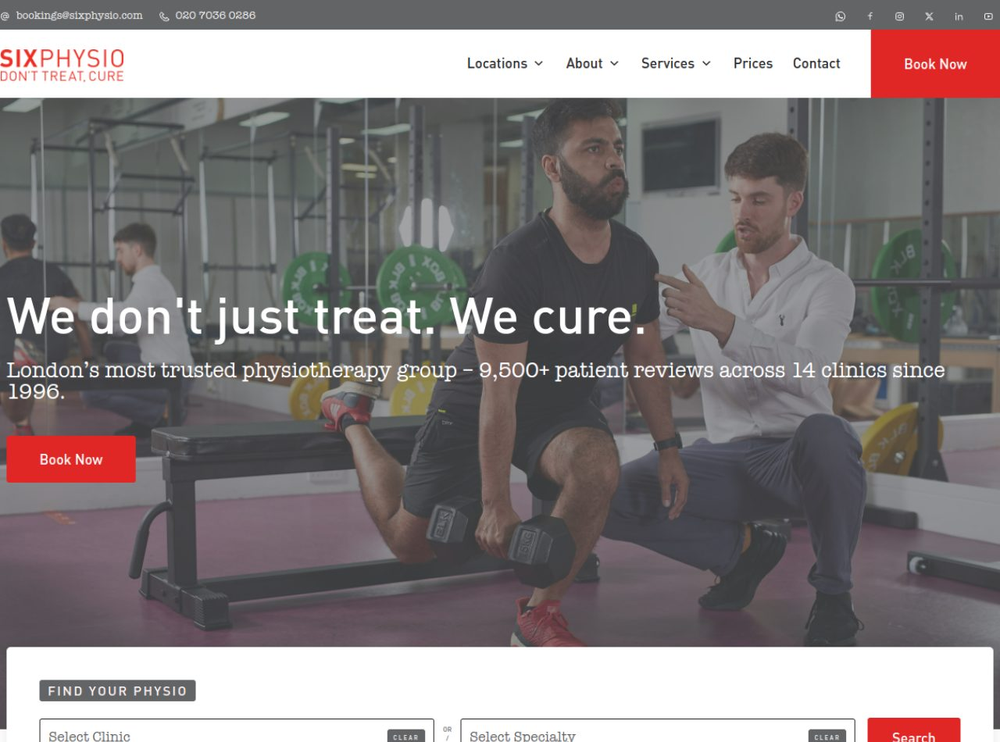
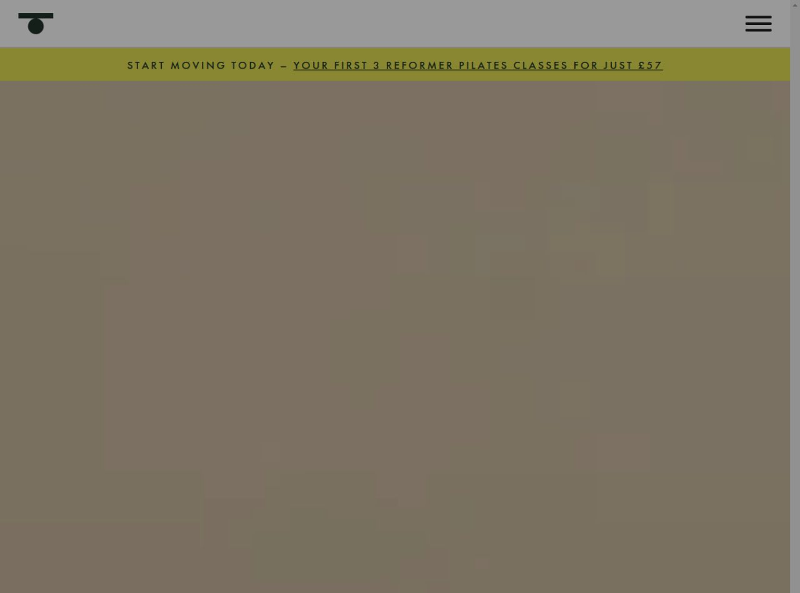
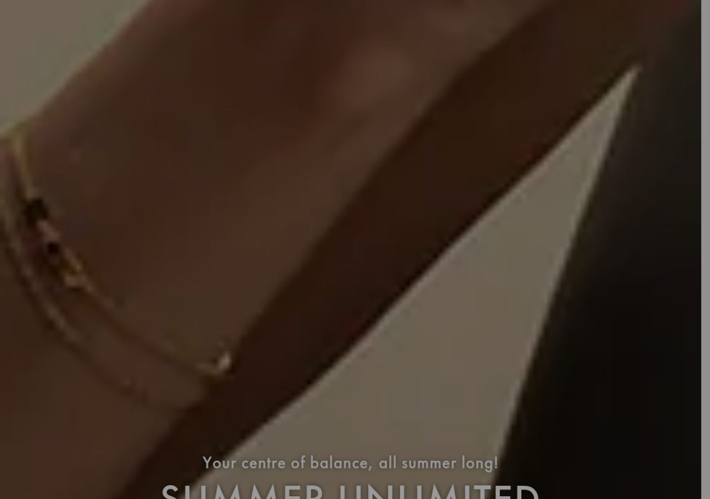
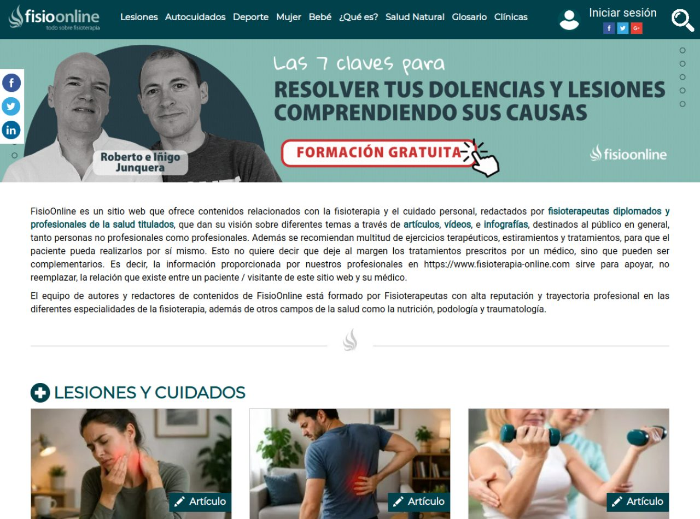

Análisis completo de 3 sitios web referentes mundiales en fisioterapia y rehabilitación, con lo que hace grande a cada uno y qué debemos replicar en las webs de nuestros clientes de Medellín.
Cada uno domina una faceta distinta: diseño premium, conversión y SEO/contenido.

Foto real (no stock) de un fisioterapeuta guiando a un paciente en un box de entrenamiento, con degradado oscuro para que el texto blanco resalte. Transmite cercanía y profesionalismo real.
Animaciones sutiles con Lottie (iconos), carruseles con Swiper, apariciones al hacer scroll. Nada estridente: el efecto está al servicio de la lectura, no del lucimiento.
Barra utilitaria (correo, teléfono, redes) → nav clásico con "Book Now" destacado en rojo → hero a pantalla completa → buscador de reserva inmediatamente debajo. Todo empuja a agendar.
Titular enorme con serif de alto contraste ("We don't just treat. We cure."). Subtítulo con el dato de autoridad. El ojo va: promesa → prueba → botón. Impecable.
Title y meta description optimizados por ciudad ("Physiotherapy in London"), datos estructurados JSON-LD, CRM HubSpot para captar leads. Arquitectura por ubicación y por servicio.
Doble CTA "Book Now" (nav + hero), teléfono y correo siempre visibles, buscador "Find your physio". La reserva nunca está a más de un clic.


Video y foto de altísima calidad, tratamiento de color cálido y "cinematográfico", primeros planos de cuerpo/movimiento. Se siente una marca de lujo, no una clínica.
Hero en video autoreproducido, transiciones suaves, barra de oferta fija arriba. Menú hamburguesa incluso en escritorio (tendencia minimalista premium).
Mucho espacio en negativo, secciones a pantalla completa que alternan imagen inmersiva y bloques de texto grande centrado. Ritmo pausado y elegante.
Tipografía display gigante ("SUMMER UNLIMITED"), en mayúsculas con mucho tracking. Poca cantidad de texto, cada palabra pesa. Acento oliva/khaki muy distintivo.
Title con servicios + ciudad y barrios ("Notting Hill, Chiswick…"), JSON-LD. SEO local por múltiples estudios.
Oferta de entrada agresiva y fija ("primeras 3 clases por £57") — táctica de tripwire para convertir al visitante nuevo en cliente de prueba.

Fotos de pacientes con la zona de dolor iluminada en rojo — truco visual genial que comunica el síntoma al instante y hace clicable cada artículo.
Mínimos y funcionales: el foco está en velocidad de carga y contenido, no en animaciones. Coherente con una web pensada para SEO y volumen.
Mega-menú por temas (Lesiones, Deporte, Mujer, Bebé, Glosario, Clínicas), párrafo introductorio con enlaces internos y grillas de tarjetas de artículo. Barra de compartir fija.
Jerarquía orientada a escaneo: títulos de sección con icono, tarjetas homogéneas, etiquetas "Artículo/Vídeo". Prioriza encontrar contenido rápido.
El punto fuerte. Arquitectura de topic clusters por lesión, texto con densidad de palabras clave y enlazado interno, autoría visible de fisioterapeutas titulados (señal E-A-T que Google premia en salud), JSON-LD. Es la referencia de cómo posicionar en español.
Lead magnet "Las 7 claves… Formación gratuita" para capturar correos, más enlaces a su directorio de clínicas. Monetiza el tráfico orgánico.
De un vistazo, qué toma prestado cada uno.
| Dimensión | Six Physio | Ten | FisioOnline |
|---|---|---|---|
| Fortaleza | Conversión / autoridad | Diseño premium | SEO / contenido |
| Titular | Promesa ("We cure") | Aspiracional editorial | Keyword de lesión |
| Imagen | Foto real tratamiento | Video cinematográfico | Foto con dolor en rojo |
| Efectos | Lottie + Swiper (sutil) | Video hero, hamburguesa | Mínimos (velocidad) |
| CTA principal | "Book Now" rojo + buscador | Oferta tripwire £57 | Lead magnet gratis |
| Qué robamos | Titular-promesa + prueba social + WhatsApp fijo | Foto full-bleed + tipografía grande + acento de color | Blog por lesión + autoría del fisio |
*_full.png).